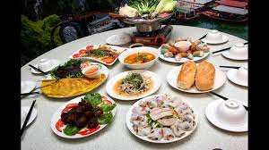

著名的越南料理
越式河粉（越南語：phở／𡂄?）
稱為「牛肉河粉」，是越南最受歡迎的粉類食品，與中國的河粉比較接近。
越式河粉的湯由肉類、香料經過長時間的燉煮而成。
加入牛肉的被稱為「牛肉河粉」（越南語：Phở bò／𡂄𤙭?），加入雞肉的被稱為「雞肉河粉」（越南語：Phở gà／鵸?）。
食用時，可以同時加入自己喜歡的香草和豆芽等。近年來，由於都市生活方式的變化以及人們生活節奏的加快，
人們對河粉的食用方式也產生了多樣的變化，如以越式河粉為主的快餐連鎖店的出現，以及杯麵、方便麵化的越式河粉也常見於市面。
順化牛肉粉（越南語：Bún bò Huế／𥻸𤙭化?）
亦稱為「越南牛肉檬粉」。原產於順化的牛肉米麵，在越南中部地區尤其受歡迎。
其肉湯通常由牛骨、發酵蝦醬、香茅、幹紅辣椒製成。食用時也常一起加入薄荷葉、
豆芽、檸檬、切碎的蕹菜等。血塊、豬蹄也很是其常見的配料。
烤肉米粉（越南語：Bún thịt nướng／𥻸𦧘𤓢?）
亦稱為「檬粉」細米麵與烤過的豬肉片、水蘸汁（越南語：nước chấm／渃蘸?。
一種混合青檸汁、 辣椒、 蒜茸、 醋和糖等調製而成一種半透明甜酸醬汁）一起食用。
與越式河粉相異之處是，烤肉米麵中一般不加入湯汁。其與越南北方的炸米麵（越南語：bún chả／𥻸鯺?）較為類似，
後者多在米麵中放入烤肉丸。

首頁
第2頁
第3頁
第5頁